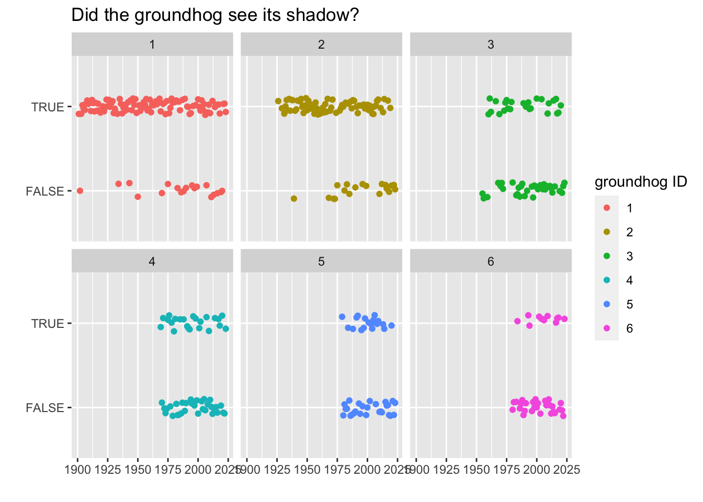
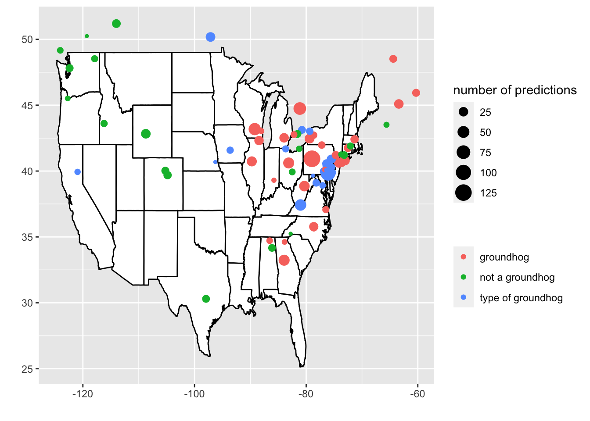

library(tidyverse) # ggplot, lubridate, dplyr, stringr, readr...
library(praise)Groundhog Dog
The Data
On February 2nd of each year, the groundhog comes out of their hole. If the groundhog sees its own shadow, it fortells six more weeks of winter weather. Today’s data include Groundhog Day Predictions from groundhog-day.com. If you haven’t seen it, you should check out the fantastic 1993 movie, Groundhog Day.
groundhogs <- readr::read_csv('https://raw.githubusercontent.com/rfordatascience/tidytuesday/master/data/2024/2024-01-30/groundhogs.csv')
predictions <- readr::read_csv('https://raw.githubusercontent.com/rfordatascience/tidytuesday/master/data/2024/2024-01-30/predictions.csv')Plotting the data
Punxsutawney Phil is arguably the most famous groundhog of those who make annual predictions. He is listed as groundhog number 1. The id values are sequentially ordered by those groundhogs (really cities / communities) with the most annual predictions.
predictions |>
filter(id <= 6) |>
filter(year > 1900) |>
drop_na(shadow) |>
ggplot(aes(x = year, y = shadow, color = as.factor(id))) +
geom_jitter(width = 0, height = 0.1) +
facet_wrap(~id) +
labs(x = "", y = "", title = "Did the groundhog see its shadow?",
color = "groundhog ID")
predictions |>
#filter(id <=10) |>
drop_na(shadow) |>
group_by(id) |>
summarize(prop_true = mean(shadow),
num_pred = n()) |>
ggplot(aes(x = id, y = prop_true)) +
geom_point(aes(size = num_pred)) +
labs(x = "groundhog ID", y = "", title = "Proportion of times the groundhog saw its shadow",
size = "number of predictions")The type of groundhog is an interesting variable. Although most of the groundhogs are actual groundhogs, some of them are a different type of animal (opossum, prairie dog, cat, beaver,…) and some are pretty random (taxidermied groundhog, person in a groundhog suit, animatronic groundhog, …). We create a new variable to bin the type into three categories of: groundhog, type of groundhog (but not a real groundhog), or not a groundhog.
location_pred <- predictions |>
drop_na(shadow) |>
group_by(id) |>
summarize(prop_true = mean(shadow),
num_pred = n()) |>
mutate(half_pred = ifelse(prop_true >= 0.5, TRUE, FALSE)) |>
full_join(groundhogs, by = "id") |>
mutate(groundhog = case_when(
type == "Groundhog" ~ "groundhog",
grepl("groundhog", type, ignore.case = TRUE) ~ "type of groundhog",
TRUE ~ "not a groundhog")) states <- map_data("state")
ggplot(states) +
geom_polygon(fill = "white", colour = "black",
aes(long, lat, group=group)) +
geom_point(data = location_pred,
aes(x = longitude, y = latitude, color = groundhog, size = num_pred)) +
labs(x = "", y = "", size = "number of predictions", color = "")
praise()[1] "You are slick!"